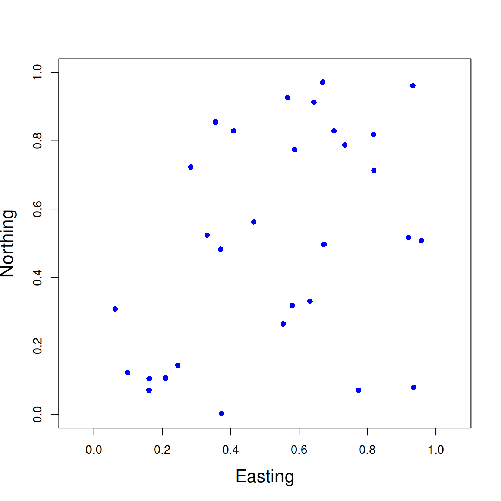
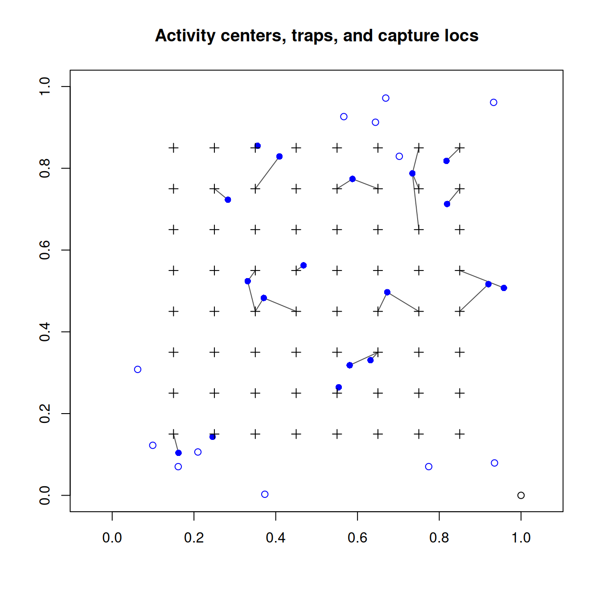
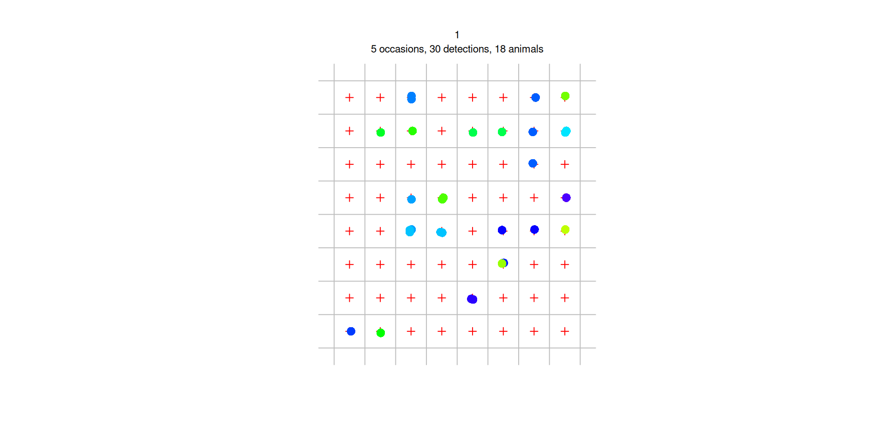
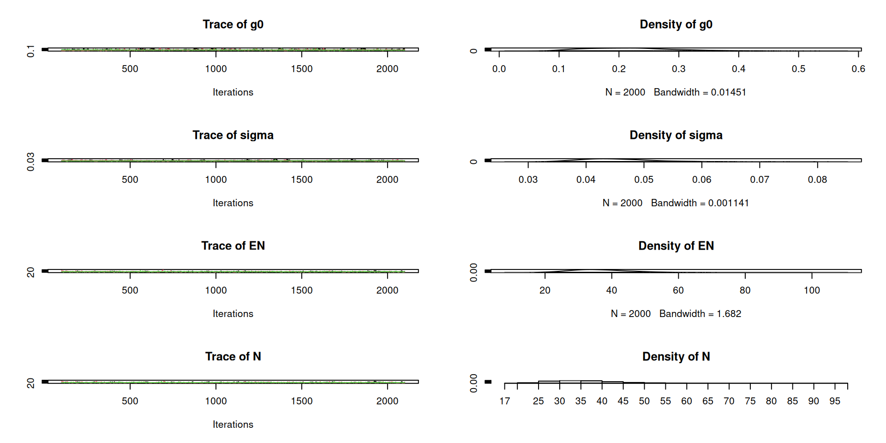
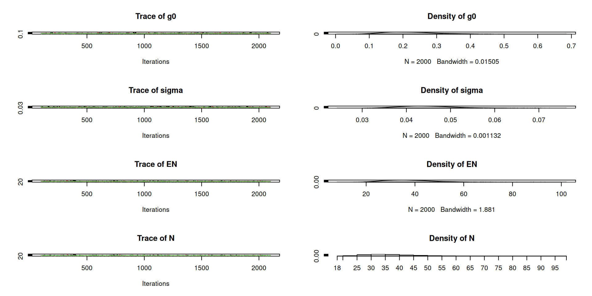

Spatial capture-recapture for
closed populations
WILD(FISH) 8390
Inference for Models of Fish and Wildlife Population Dynamics
SCR capture histories can be organized as a 3D array where \(y_{ijk}\) indicates if individual \(i=1,\dots,n\), was captured in trap \(j=1,\dots,J\) on occasion \(k=1,\dots,K\).
| Occasion | |||||||
|---|---|---|---|---|---|---|---|
| Trap | Trap | ||||||
| 1 | 2 | ||||||
| Individual | 1 | 2 | 3 | 1 | 2 | 3 | |
| 1 | 0 | 0 | 0 | 1 | 0 | 1 | |
| 2 | 1 | 1 | 1 | 0 | 1 | 1 | |
| 3 | 0 | 1 | 0 | 0 | 0 | 0 | |
| 4 | 0 | 1 | 1 | 1 | 0 | 0 | |
Because we know the coordinates of the traps, we also know when and where each individual was detected.
This spatial information has been available all along, but it wasn’t utilized to estimate density until Efford (2004, Oikos).
State model (a spatial point process model) \[ \lambda({\bf s}) = \exp(\beta_0 + \beta_1 w_1({\bf s}) + \beta_2 w_2({\bf s}) + \cdots) \\ \Lambda = \int_{\mathcal{S}} \lambda({\bf s}) \; \mathrm{d}{\bf s} \\ N \sim \mathrm{Pois}(\Lambda) \\ {\bf s}_i \propto \lambda({\bf s}) \;\; \mathrm{for}\; i=1,\dots,N \]
Observation model (supposing \(N\) was known) \[ p_{ij} = g_0\exp(-\|{\bf s}_i - {\bf x}_j\|^2/(2\sigma^2)) \;\; \mathrm{for}\, j=1,\dots,J \\ y_{ijk} \sim \mathrm{Bernoulli}(p_{ij}) \]
\(\lambda({\bf s})\) – “Intensity function” describing expected density of individuals at location \(\bf s\)
\(\Lambda\) – Expected number of individuals in the spatial region \(\mathcal{S}\)
\(N\) – Realized number of individuals (ie, population size)
\({\bf s}_i\) – Location of the \(i\)th activity center
\({\bf x}_j\) – Location of trap \(j\)
\(\|{\bf s}_i - {\bf x}_j\|\) – Euclidean distance between \({\bf s}_i\) and \({\bf x}_j\)
\(g_0\) – Capture probability when distance between activity centers and traps is 0
\(\sigma\) – Scale parameter of encounter function
\(p_{ij}\) – Capture probability
\(y_{ijk}\) – Spatial capture histories
Many variations and extensions are possible for both the state and observation models, but today we will focus on the simplest case with no spatial variation in the expected value of density.
\[ N \sim \mathrm{Pois}(\lambda) \\ {\bf s}_i \sim \mathrm{Unif}(\cal S) \\ p_{ij} = g_0\exp\left(\frac{-\|{\bf s}_i - {\bf x}_j\|^2}{2\sigma^2}\right) \\ y_{ijk} \sim \mathrm{Bernoulli}(p_{ij}) \]
Just remember, this formulation isn’t exactly correct because we can’t observe the “all zero” encounter histories (and thus we don’t know \(N\)).
Compute distances between activity centers (\({\bf s}_1, \dots, {\bf s}_N\)) and traps (\({\bf x}_1, \dots, {\bf x}_J\)).
Look at distances between first 4 individuals and first 5 traps.
Simulate capture histories for all \(N\) individuals
Discard individuals not captured
Capture histories for first 2 individuals and first 5 traps on first occasion.

Program DENSITY
Windows program with GUI
R package ‘secr’
The oldest R package with the most options
R package ‘oSCR’
Import data from two text files
Object class capthist
Detector type proximity
Detector number 64
Average spacing 100 m
x-range 150 850 m
y-range 150 850 m
Counts by occasion
1 2 3 4 5 Total
n 9 4 4 6 6 29
u 9 1 2 3 3 18
f 9 7 2 0 0 18
M(t+1) 9 10 12 15 18 18
losses 0 0 0 0 0 0
detections 9 5 4 6 6 30
detectors visited 9 5 4 6 6 30
detectors used 64 64 64 64 64 320
Fit the SCR equivalent of Model \(M_0\)
beta SE.beta lcl ucl
D -1.050968 0.2738747 -1.587753 -0.5141834
g0 -1.276753 0.4489717 -2.156721 -0.3967843
sigma 3.789683 0.1342465 3.526565 4.0528010Estimates on original scale
link estimate SE.estimate lcl ucl
D log 0.3495992 0.09757018 0.2043844 0.5979887
g0 logit 0.2181035 0.07656510 0.1037048 0.4020852
sigma log 44.2423619 5.96624128 34.0069365 57.5584511D is density (\(\lambda\), animals/ha), g0 is \(g_0\), and sigma is \(\sigma\).
Fit the SCR equivalent of Model \(M_t\)
beta SE.beta lcl ucl
D -1.0603936 0.2725340 -1.594550 -0.5262367
g0 -0.6434653 0.6623739 -1.941694 0.6547637
g0.t2 -0.8125256 0.7056696 -2.195613 0.5705614
g0.t3 -1.1182751 0.7397397 -2.568138 0.3315881
g0.t4 -0.6023297 0.6829484 -1.940884 0.7362246
g0.t5 -0.6045682 0.6819724 -1.941210 0.7320733
sigma 3.7799754 0.1330984 3.519107 4.0408435Estimates on original scale
Fit the SCR equivalent of Model \(M_b\)
beta SE.beta lcl ucl
D -0.9355618 0.5587887 -2.030768 0.1596439
g0 -1.5401416 1.0918175 -3.680065 0.5997815
g0.bTRUE 0.2900354 1.0711536 -1.809387 2.3894579
sigma 3.7945281 0.1361532 3.527673 4.0613835Estimates on original scale
What about \(N\)? E.N is the expected value of \(N\). R.N is the realized value of \(N\).
estimate SE.estimate lcl ucl n
E.N 34.24296 9.556923 20.01929 58.57253 18
R.N 34.24297 7.555912 24.82226 56.67252 18 estimate SE.estimate lcl ucl n
E.N 33.92172 9.419174 19.88367 57.87077 18
R.N 33.92173 7.402642 24.69007 55.89223 18Was buffer big enough?
link estimate SE.estimate lcl ucl
D log 0.3554085 0.09872472 0.2082871 0.6064475 link estimate SE.estimate lcl ucl
D log 0.349599 0.09757013 0.2043843 0.5979884 link estimate SE.estimate lcl ucl
D log 0.3494254 0.09755105 0.204251 0.5977846 link estimate SE.estimate lcl ucl
D log 0.3494237 0.09755102 0.2042495 0.5977831AIC
The DA version of a basic SCR model is:
\[ {\bf s}_i \sim \mathrm{Unif}(\mathcal{S}) \\ z_i \sim \mathrm{Bern}(\psi) \\ p_{ij} = g_0\exp\left(\frac{-\|{\bf s}_i-{\bf x}_j\|^2}{2\sigma^2}\right) \\ y_{ijk} \sim \mathrm{Bern}(z_i \times p_{ij}) \\ N=\sum_{i=1}^M z_i \]
model {
g0 ~ dunif(0, 1) ## Baseline capture probability
sigma ~ dunif(0, 0.5) ## Scale parameter of encounter function
psi ~ dunif(0, 1) ## Data augmentation parameter
for(i in 1:M) {
s[i,1] ~ dunif(xlim[1], xlim[2]) ## x-coord of activity center
s[i,2] ~ dunif(ylim[1], ylim[2]) ## y-coord of activity center
z[i] ~ dbern(psi) ## Is individual real?
for(j in 1:J) {
dist[i,j] <- sqrt((s[i,1]-x[j,1])^2 + (s[i,2]-x[j,2])^2)
p[i,j] <- g0*exp(-dist[i,j]^2/(2*sigma^2))
for(k in 1:K) {
y[i,j,k] ~ dbern(z[i]*p[i,j]) ## Model for the capture histories
}
}
}
EN <- M*psi ## Expected value of N
N <- sum(z) ## Realized value of N
}Data
Inits and parameters
MCMC
Iterations = 101:2100
Thinning interval = 1
Number of chains = 3
Sample size per chain = 2000
1. Empirical mean and standard deviation for each variable,
plus standard error of the mean:
Mean SD Naive SE Time-series SE
EN 37.73026 10.232163 1.321e-01 0.4117271
N 37.30900 8.852848 1.143e-01 0.3695890
g0 0.22109 0.079680 1.029e-03 0.0036654
sigma 0.04543 0.006883 8.886e-05 0.0003373
2. Quantiles for each variable:
2.5% 25% 50% 75% 97.5%
EN 21.37830 30.2722 36.57724 43.80305 60.71610
N 24.00000 31.0000 36.00000 42.00000 58.00000
g0 0.09579 0.1636 0.21099 0.26980 0.40370
sigma 0.03457 0.0408 0.04465 0.04902 0.06126
model {
g0 ~ dunif(0, 1) ## Baseline capture probability
sigma ~ dunif(0, 0.5) ## Scale parameter of encounter function
psi ~ dunif(0, 1) ## Data augmentation parameter
for(i in 1:M) {
s[i,1] ~ dunif(xlim[1], xlim[2])
s[i,2] ~ dunif(ylim[1], ylim[2])
z[i] ~ dbern(psi)
for(j in 1:J) {
dist[i,j] <- sqrt((s[i,1]-x[j,1])^2 + (s[i,2]-x[j,2])^2)
p[i,j] <- g0*exp(-dist[i,j]^2/(2*sigma^2))
}
}
for(i in 1:n) { ## Model for observed capture histories
for(j in 1:J) {
y.tilde[i,j] ~ dbinom(p[i,j], K)
}
}
for(i in (n+1):M) { ## Model for augmented guys
PrAtLeastOneCap[i] <- 1-prod(1-p[i,])^K
zero[i] ~ dbern(PrAtLeastOneCap[i]*z[i])
}
EN <- M*psi ## Expected value of N
N <- sum(z) ## Realized value of N
}Data
Inits and parameters (same as before)
MCMC
Iterations = 101:2100
Thinning interval = 1
Number of chains = 3
Sample size per chain = 2000
1. Empirical mean and standard deviation for each variable,
plus standard error of the mean:
Mean SD Naive SE Time-series SE
EN 37.54321 10.296915 1.329e-01 0.4074486
N 37.08667 8.942827 1.155e-01 0.3686001
g0 0.22852 0.079011 1.020e-03 0.0034507
sigma 0.04455 0.006254 8.074e-05 0.0002842
2. Quantiles for each variable:
2.5% 25% 50% 75% 97.5%
EN 21.68437 30.56296 36.1399 42.89445 61.90485
N 24.00000 31.00000 36.0000 41.00000 58.00000
g0 0.10293 0.17150 0.2202 0.27316 0.40942
sigma 0.03483 0.04019 0.0438 0.04787 0.05908
Common options include:
| Model | Detector/Trap | Examples |
|---|---|---|
| Bernoulli | Proximity | Hair-snares |
| Poisson | Count | Camera trap |
| Multinomial/Categorical | Multi-catch | Mist net, crab pot |
| — | Single-catch | Sherman trap |
There are other observation models for data from area searches, transects, or acoustic recording units.
SCR involves model-based, rather than design-based, inference (see Ch. 10).
Random placement of traps is not required, but it’s a good idea to randomly sample locations along the environmental gradients you’re interested in.
The other two key design considerations are: - Capture as many individuals as you can (i.e., maximize \(n\)) - Obtain as many spatial recaptures as possible
There is a tradeoff between these two objectives. Simulation is often the best option for finding the right balance.
We assume that variation in \(p\) arises from distance between animals and traps.
We can estimate abundance and model distribution (i.e., spatial variation in density)
Next time, we’ll see how to do that using secr and JAGS, and we’ll make a bunch of maps.
Create a self-contained R script or Rmarkdown file to do the following:
load("jags_bear_data.gzip")) and tabulate the capture frequencies and the number of spatial recapture. Fit the model with occasion-specific \(g_0\) in ‘JAGS’, and compare estimates and 95% CIs for \(g_{0}\), \(\sigma\), \(E(N)\) and \(N\) with the results from secr.Upload your work to ELC by 5:00pm on Tuesday.